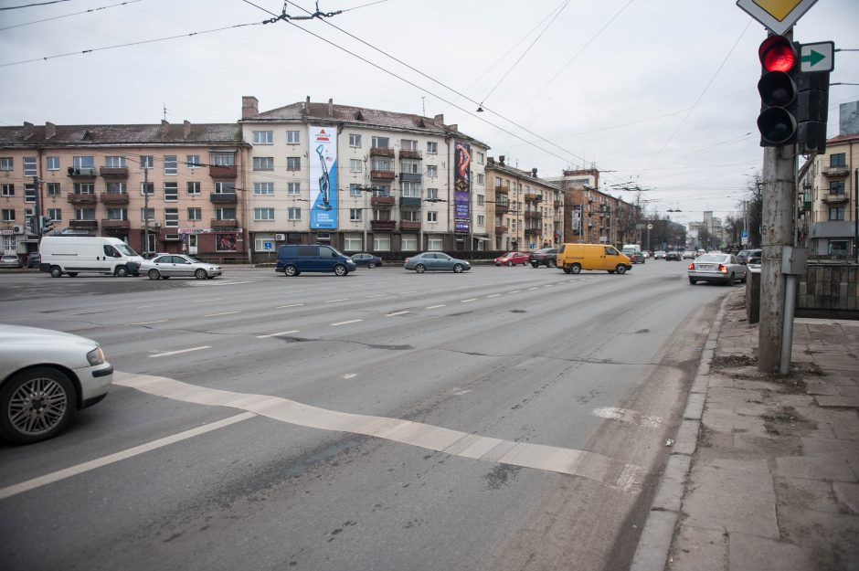

Welcome to vaizdo-kameros
Vaizdo kameros - DELFI Orai
2020.10.27 11:24
Spalio 27 d., antradienis | Vilnius 13 Kaunas 13 Klaipėda 13 Šiauliai 12 Panevėžys 13 Alytus 13 Nida 12 Raseiniai 12 Utena 13 Mažeikiai 12 Biržai 13 Kėdainiai 13 Kiti miestai Paieška | Pranešti naujieną | LT RU EN | Reklama Kontaktai | Statistika | + Apie Delfi plius Prisijungti Naujausios Skaitomiausios Lietuvoje Sportas Orai Kriminalai Užsienyje Veidai Horoskopai Gyvenimas Mokslas Verslas Daugiau Sveikata Kultūra Auto M360 Politiko akimis Jaunimas Pilietis Nuomonių ringas Multimedija Teisė Medijos Karas Propaganda PT Melo detektorius Demaskuok Ačiū už pamokas Temos | Delfi Video
Naujienos
Naujausios Skaitomiausios Lietuvoje Sportas Kriminalai Užsienyje Veidai GyvenimasVerslas Mokslas Kultūra Sveikata Auto Pilietis Miestai M360 Politiko akimis
Delfi Video
Tiesioginės transliacijos Delfi Diena Delfi Dėmesio centre LaidosNaudinga
Orai Horoskopai Receptai TV Programa Valiutų kursaiDelfi projektai
Multimedija Idėja Lietuvai Kablys Smalsūs EP Atsakingas požiūris Atgal į gyvenimąDelfi kanalai
Agro Būstas Moterys Šeima Kelionės Grynas Stilius Maistas Letena Karjera Bored Panda Sek DelfiMobilusis Delfi
orai Lietuvoje Pasaulyje Europoje Populiarios vietos Gyvas vaizdas Eismo informacija ‣ Tiesiogiai iš Geležinio vilko g. Vilniuje ‣ Tiesiogiai iš Katedros aikštės Vilniuje ‣ Tiesiogiai iš Kauno ‣ Tiesiogiai iš Klaipėdos uosto ‣ Tiesiogiai iš Trakų ‣ Tiesiogiai iš Nidos ‣ Tiesiogiai iš Palangos ‣ Tiesiogiai iš žemaitijos ‣ Tiesiogiai iš Raudonės pilies ‣ Tiesiogiai iš elnyno ‣ Tiesiogiai iš Svencelės ‣ Tiesiogiai iš Anykščių ‣ Tiesiogiai iš Druskininkų Sekite DELFI REKLAMA KONTAKTAI PRIVATUMAS KARJERA en.delfi.lt ru.delfi.lt pl.delfi.lt delfi.ee rus.delfi.ee delfi.lv ru.delfi.lv UAB DELFI Gynėjų g. 16, 01109 Vilnius +37052045400 info@delfi.lt © 1999-2020 DELFI. Visos teisės saugomos .
